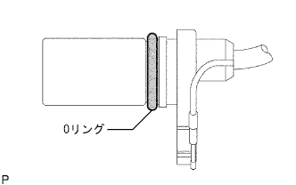
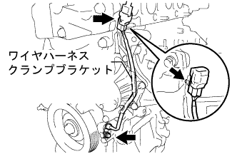
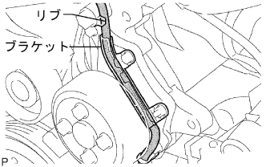
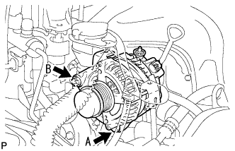

Crankshaft Position Sensor (2AZ-FE) Installation |
| 1. Install Crankshaft Position Sensor |
 |
Apply a light coat of engine oil to the O-ring.
 |
Install the crank position sensor with the bolt.
Fit the wire harness into the wire harness clamp bracket.
Connect the connector.
| 2. Install Alternator Assembly |
 |
Check that the crankshaft position sensor wire harness is securely fitted into the wire harness clamp bracket and passes behind the rib of the timing chain cover.
 |
Install the Alternator with the 2 bolts.
 |
Install the harness clamp.
Install the clamp bracket with the bolt.
Connect the harness to the +B terminal with the nut.
Install the terminal cap.
Connect the connector.
| 3. Install Fan & Alternator V Belt |
 |
Using SST, slowly turn the V-belt tensioner clockwise and install the V-belt.
 |
Check that the belt is fitted on each pulley.
 |
Check that the belt is correctly set on each pulley.
Start the engine and check that the belt rotates smoothly with no abnormal noise.
| 4. Install Radiator Upper Air Deflector |
Install the radiator upper air deflector with the 8 clips.
| 5. Install Engine Under Cover Rear RH |
| 6. Install Front Tire RH |
| 7. Connect Battery Negative Terminal |
| 8. Initialization after Battery Terminal Disconnection and Reconnection |
)